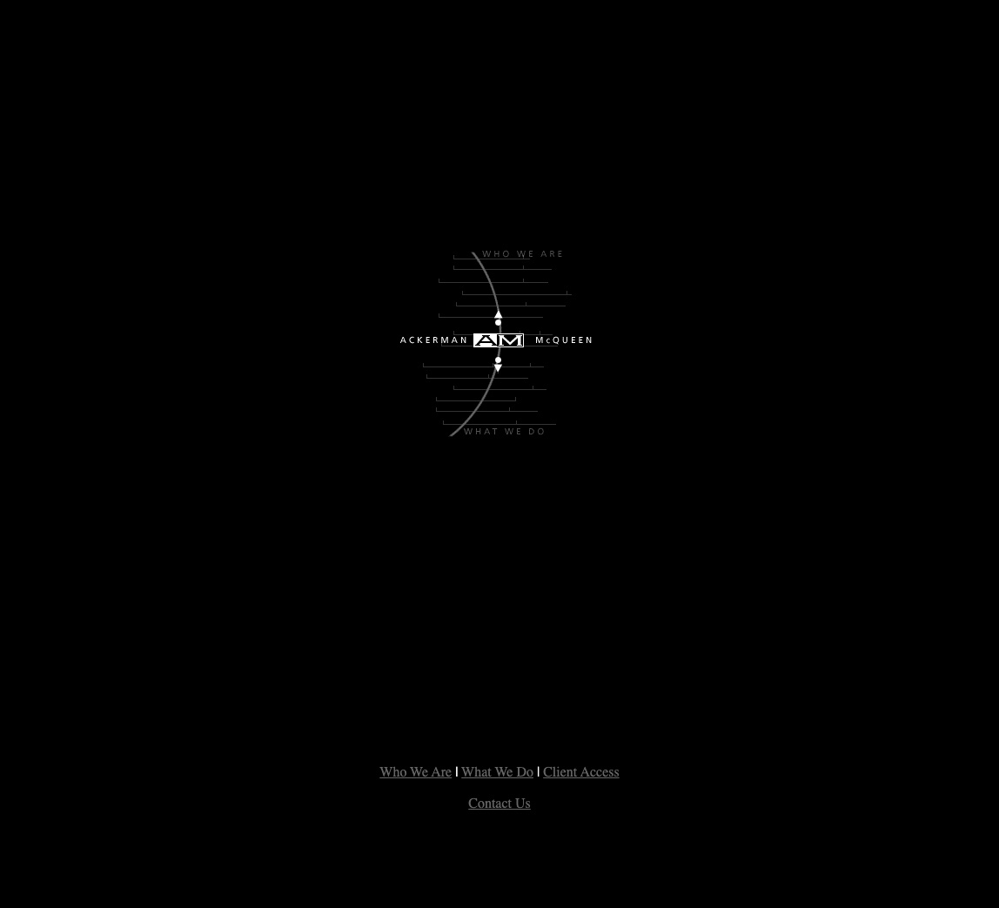
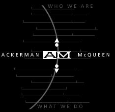
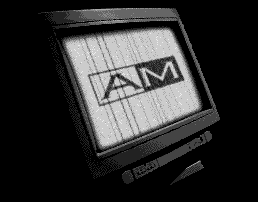
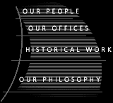
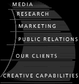
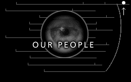
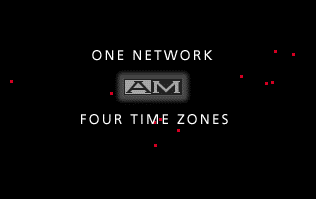
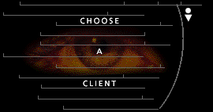
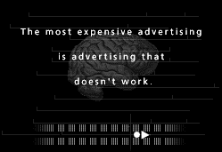
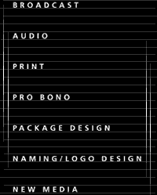

lab.philipbaker.us / 90s-web-ackerman-mcqueen

Ackerman McQueen
Philip Baker · 1991 – 2000 · SR VP, Director of New Media
Before the Shockwave gateway and the Flash rebuild, am.com was this: black to the edges, hairline teal rules, small-caps navigation, photography doing the talking. I designed it in the late '90s, when an agency website was still a thing you invented from scratch. The server is long gone — these are the surviving pages, recovered from the Wayback Machine, shown as they actually rendered.









The Offices
Pulled out of the am.com Shockwave movies with a decompiler — the buildings and the rooms, as they were photographed for the site. Click any frame for full size.


{kind=link}
{kind=link}
{kind=link}
What The Place Was
These screenshots can't tell you what it was like inside.
Ackerman McQueen towered over everything around it. Big national accounts. Big thinking. The best talent within five hundred miles, all of them obsessed with the craft, all of them working all the fucking time. Nothing left the building without being torn apart first — mounted, flapped, argued over, then carried up to Angus McQueen's chair for a verdict. Being the best wasn't a slogan there. It was the price of admission.
I walked in a green art director. I became an editor, then a producer, then the guy building new media and the internet — and they were there for all of it. It was the hardest job of my life, and it was always fair. Talent got rewarded. Work got rewarded. If you gave that place everything, it gave everything back. I cried plenty of tears in that building. And it's the foundation of almost everything good in my career.
The mentors were a different class of person. They had training. They had experience. They had confidence. They had your attention the moment they started talking — nobody had to tell you who they were. That way of being isn't around anymore. It was the path to greatness.
Angus was a fierce man and the best mentor I've ever had. He wasn't the only one. Jon Minson, Gayle Daniels, Jeanette Elliott, Debbie Johnson, Lael Erickson, Melanie Hill, Clay Turner, David Elmore, Rick Perdue, Bill Winkler, Gurney Sloan, Barbara Johnston, Tim Oden — every one of them took time they didn't have to teach me. I felt special. I still don't know where they found the hours.
Jeanette Elliott, Lael Erickson, and Barbara Johnston, along with Don Juntunen, made the most thoughtful television I've ever been around. So good. So rich.
And none of this was mine alone — it was all of us. Ray Hatfield, Vincent Bumgarner, Matthew Grice, Blake Dunn, Paul Westgate, Beau Wade, Joel Maple, Brice Long, Charley Schmitz, and Trish and Nikki. Self-taught, most of us, building things nobody in that building knew how to build.
Everything I do today started in that building. I'd go back in a second.
The Screening Room
I didn't produce these. They came out of the same building in the same years — the TV spots the agency was making while I was down the hall in the Lab. They're here because they're what the place sounded and looked like, and because the crawlers happened to catch them. The bottom five were recovered from the Wayback Machine and converted to play — the untouched originals are QuickTime, AVI and Windows Media. The first two come from someone else's archive on YouTube.